Es entsteht ein neues Projekt: Deckblatt, eine Seite je Arbeit (mit Bild und Legende), leere Plätze für noch Fehlendes sowie Seiten für Statement, Werkliste und Inhaltsverzeichnis. Alles bleibt editierbar.